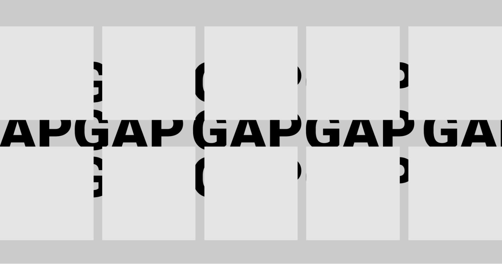

The Gap Strikes Back: Now Stylable
Styling the space between layout items — the gap — has typically required some clever workarounds. But a new CSS feature changes all that with just a few simple CSS properties that make it easy, yet also flexible, to display styled separators between your layout items.
Patrick Brosseton July 1,2025